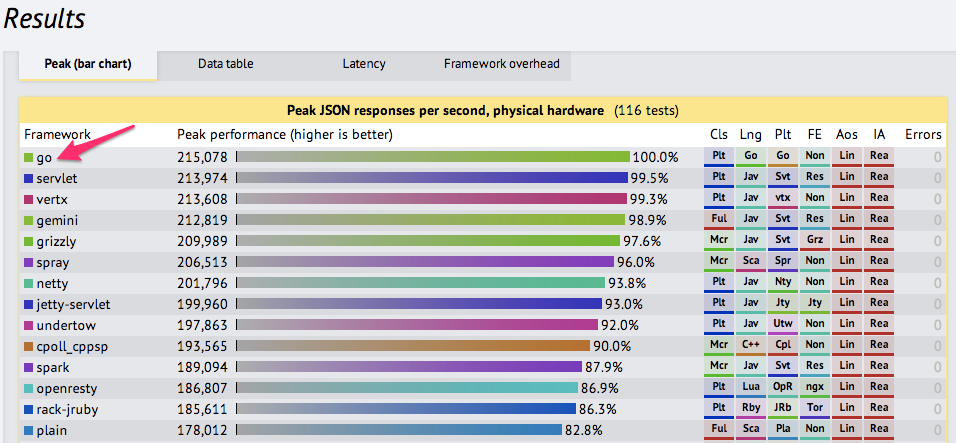
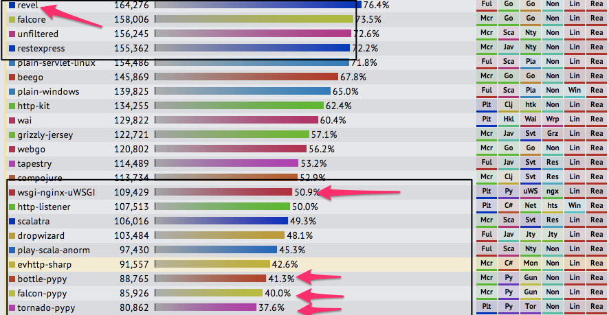
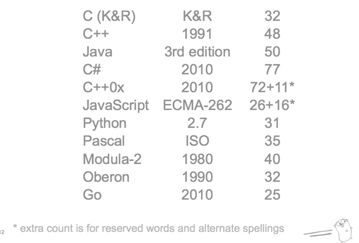

A Gentle Intro to Go
22 February 2014
Fred Alger
Increasing the Bus Factor at FoxyCart
Goals
- To give you a taste of Go...
- So you can get addicted like me. :)
Goals (cont.)
- Compare and contrast Go & Python strengths
- Show ways that Go might help your project
Me
- Polyglot at heart
- BASIC → Visual Basic → C → C++ → PHP → SQL → Javascript → Java → Python → Ruby → Bash → Lasso (briefly) → Factor → Forth → Go
Me
- "the right tool for the job"
- Like simple things.
Nowadays
- Do a lot of system administration.
- Spread the knowledge
What do you call someone who writes Go code?
What do you call someone who writes Go code?
"So a Gopher goes to a Python convention..."
So what's the deal?
- Just another programming lanugage?
- Something new.
Why I think it's something new
- whitespace like a pythonista
- elegant like a rubyist
- async like a node.js junkie
- concurrent like an erlanger
- typesafe and GC'd like a Javabro
- minimal like a C guru
What is Go?
- Google
- Rob Pike (Plan 9) / Ken Thompson (B, UNIX) / Robert Griesemer (V8 / Chubby)
- ~5 years old
- Surprisingly mature
Go?
- Also "Golang"
- Statically typed
- Compiled
- Concurrent
Go?
- A stable language specification (v1.2 as of today)
- A runtime
- A suite of tools (
go build, go get, go install, go doc)
Hello Go
package main
import "fmt"
func main() {
fmt.Println("Hello, 世界")
}
Hello Python
#!/usr/bin/python
if __name__ == '__main__':
print "Hello, 世界!"
Hello Python
#!/usr/bin/python
if __name__ == '__main__':
print "Hello, 世界!"
BUT WAIT
SyntaxError: Non-ASCII character '\xe4' in file hello.py on line 3, but no encoding declared;
see http://www.python.org/peps/pep-0263.html for details
Hello Python 2
#!/usr/bin/python
# -*- coding: utf-8 -*-
# ^^^^ Don't forget that magic!
if __name__ == '__main__':
print "Hello, 世界!"
What's great!
What's great about Python
What's great about Go: same values
- Result: Programmer productivity.
What's great about Go: same values
Simple
- concepts are easy to understand
- (the implementation might still be sophisticated)
Orthogonal
- concepts mix cleanly
- easy to understand and predict what happens
Succinct
- no need to predeclare every intention
Safe
- misbehavior should be detected
gotocon.com/dl/jaoo-aarhus-2010/slides/RobPike_KeynoteTheExpressivenessOfGo.pdf
Familiar?
Python philosophy
>>> import this
The Zen of Python, by Tim Peters
Beautiful is better than ugly.
Explicit is better than implicit.
Simple is better than complex.
Complex is better than complicated.
Flat is better than nested.
Sparse is better than dense.
Readability counts.
Special cases aren't special enough to break the rules.
...
What's great about Python? (cont.)
- Interactive development / REPL
But... Go is compiled!
Go is compiled
1. Edit code
2. go build test.go
3. ./test
Go is compiled
- Compiled, but compiles quickly
- Extremely fast, build the whole Go compiler in < 10 seconds
- Compiling prevents errors
Compiler
Less of this:
xkcd.com/303/
Compiled (cont.)
What great about Python (cont.)
- "Batteries included" standard library
Go's standard library
- Web-oriented
- System calls
- Encryption
- Compression / decompression
- Templating
- Production-grade web server
Go standard library
package main
import (
"log"
"fmt"
"net/http"
)
func handler(w http.ResponseWriter, r *http.Request) {
fmt.Fprintf(w, "Hello, %s.", r.URL.Path[1:])
log.Println("GET", r.URL.Path)
}
func main() {
http.ListenAndServe(":3434", http.HandlerFunc(handler))
}
localhost:3434/pytn
Go web server
Go web server
- Chunked encoding
- Keepalives
- Sandboxing
- Battle tested, DoS hardened
Easy deployment
- No nginx, copy the binary and run it
What's great about Python?
- Built-in Docs
- Generated docs
Godoc
godoc.dev/pkg/net/http
godoc.dev/pkg/net/http/#Handler
Godoc
- Works from the CLI too
- Interactive examples on golang.org
What's great about Python (cont.)
- Community, PSR
- Made by smart people like YOU
Go community
- Small, active
- Full of smart, opinionated people
What could be better
What could be better (cont.)
- Deployment — pip, virtualenv
2.6 vs 2.7 vs 3k- Needs "legs" — WSGI, worker pool, pool monitoring
Go awesome: deployment
- Copy the binary
- Run the binary
- Love the binary
What could be better (cont.)
- Interpreter startup
- Especially on low-end systems (Raspberry Pi)
Go awesome: cross compilation
- Builds arm binaries & deb/rpm packages
github.com/laher/goxc
What could be better
- I'm actually OK with the GIL
- There are good reasons for it (C extensions)
- But...
What could be better (cont.)
- It's bad for multi-threading, especially in CPU-bound programs.
- ^C a multi-threaded Python program? Good luck.
Gory details:
www.dabeaz.com/python/GIL.pdf
What's great about Go
FAST

FAST (cont.)

Concurrency vs. parallelism
- Threads vs. greenlets
- Go implements CSP
en.wikipedia.org/wiki/Communicating_sequential_processes
Concurrency vs. parallelism
- "Share by Communicating"
- Channels and goroutines vs. threads and locks/mutexes
- Nice abstraction
Concurrency vs. parallelism
package main
import (
"fmt"
"time"
)
func counter(response chan int) {
for i := 0; i < 3; i++ {
time.Sleep(1 * time.Second)
response <- i
}
close(response)
}
func main() {
ch := make(chan int)
go counter(ch)
for resp := range(ch) {
fmt.Printf("Got: %d!\n", resp)
}
}
Concurrency vs. parallelism
- Moore's Law
- Parallelism is the future
- Runtime support
export GOMAXPROCS=8 # number of CPUs
More Go Strengths
What's weird about Go
More Go Strengths
Strong philosophy
- Simple / Orthogonal / Succinct / Safe
- Programmer productivity
- Fun.
Simple: Clean syntax
- Few types and keywords (only 25)
- Smaller than most languages
Clean

gotocon.com/dl/jaoo-aarhus-2010/slides/RobPike_KeynoteTheExpressivenessOfGo.pdf
Simple: Automatic formatting
- The standard for how Go code should be formatted?
- The output of the
go fmt tool.
- PEP-8 on steroids
Safe: Compiler (cont.)
- Forces clean code
- Static checks are nice
Compiler (cont.)
Unused variables:
package main
import "fmt"
func main() {
count := 27
fmt.Println("Count:")
}
Compiler (cont.)
Fat-fingered mistakes:
package main
import "fmt"
func main() {
count := 27
fmt.Println("Count:", cnout)
}
Compiler (cont.)
Monkey Business:
package main
import "fmt"
func main() {
count := 27
count()
fmt.Println("Count:", count)
}
Compiler (cont.)
Type safety:
package main
import "fmt"
func main() {
count := 27
fmt.Println("Count:", count)
count = "twenty seven"
}
Compiler (cont.)
- Stops you from writing scummy code.
Compiler
- Checks yourself before you wrecks yourself
What's weird about Go
What's weird about Go
Pascal-style declarations
var count int
var samples []int // Brackets first, really
func sum(array []int) int { // Return type at the end
// ...
}
NOT
What's weird (cont.)
Pascal-style declarations
var count int
var samples []int
count := 1 // "Declare and initialize"
samples := make([]int) // Type is inferred from RHS
"You shouldn't have to repeat things that the compiler already knows or can guess."
What's weird (cont.)
The brackets thing is weird, I'm still not 100% used to it.
What's weird (cont.)
Unused imports are an error
package main
import "fmt"
import "encoding/json"
func main() {
fmt.Println("Hello, 世界")
}
What's weird (cont.)
Module visibility is specified by upper or lower case.
package gravitron
func notExported() {
// ...
}
func Exported() {
// ...
}What's weird (cont.)
- Object oriented, sort of
- Interfaces
- No inheritance, only embedding
Actually, Interfaces are nice
- Duck typing that gets checked
Actually, Interfaces are nice
- Interfaces specify "I need a thing that does this"
type Reader interface {
Read(p []byte) (n int, err error)
}
func ReadData(reader io.Reader) {
}Actually, Interfaces are nice
Lots of things provide the Reader interface:
- Crypto algorithms
- Network sockets
- HTTP Requests
- MIME data
Actually, Interfaces are nice
Lots of things use them as well:
- JSON decoder
fmt, Printf / Println to anywhere
Neat applications
Signals in Python
Callbacks
import signal, sys
def handler(signum, frame):
print 'Got signal:', signum
sys.exit()
signal.signal(signal.SIGQUIT, handler)
signal.signal(signal.SIGINT, handler)
while True:
pass
Signals in Go
No Callbacks
func main() {
quit := make(chan os.Signal, 1)
signal.Notify(quit, os.Interrupt, os.Kill)
fmt.Println("Started")
// do some work ...
sig := <- quit // now wait
fmt.Println("Got signal:", sig)
}
Application: Cheap Concurrency
- Little overhead
- Create thousands of goroutines every second
- Expressive patterns
Concurrency
Working with a web API
func testUsers() {
user := api.fetchUser(...) // blocking calls
store := api.fetchStore(...)
// ... other work
if (store.User != user.Id) { // result used here
// ...
}
}
Concurrency (cont.)
- Pretty common in a test suite
- Slow
- Threaded? Could be annoying.
Concurrency (cont.)
Concurrency (cont.)
func testUsers() {
userChan := make(chan User) // make channels
storeChan := make(chan Store)
go func() { userChan <- api.fetchUser() }() // goroutines start immediately
go func() { storeChan <- api.fetchStore() }()
// this func does other work in parallel...
user := <- userChan // and then waits for those operations to complete
store := <- storeChan
if (store.User != user.Id) {
// ...
}
}
Concurrency (cont.)
func testUsers() {
userChan := make(chan User) // make channels
storeChan := make(chan Store)
go func() { userChan <- api.fetchUser() }() // goroutines start immediately
go func() { storeChan <- api.fetchStore() }()
// this func does other work in parallel...
user := <- userChan // and then waits for those operations to complete
store := <- storeChan
if (store.User != user.Id) {
// ...
}
}
Concurrency (cont.)
func testUsers() {
userChan := make(chan User) // make channels
storeChan := make(chan Store)
go func() { userChan <- api.fetchUser() }() // goroutines start immediately
go func() { storeChan <- api.fetchStore() }()
// this func does other work in parallel...
user := <- userChan // and then waits for those operations to complete
store := <- storeChan
if (store.User != user.Id) {
// ...
}
}
Concurrency (cont.)
- Let your program's logic dictate the flow, not threading / callback logic.
- Feels very natural.
Further Applications
- Tiny Servers
- Data collection
- Notifications
- Workers
Application: Tiny Servers
Application: Tiny Servers
- CloudFlare's Railgun: http://blog.cloudflare.com/go-at-cloudflare
- HTTP proxy server
Application: Tiny Servers
- Compressed / delta / multiplexed replies
- Run on your server
- CloudFlare edge talks to it directly
Application: Tiny Servers
- Unique approach
- Big performance benefits
- Go features: speed, reliability, compiled binaries
Application: Data Collection
Application: Data Collection
bit.ly wrote a Go implementation of etsy's statsd:
https://github.com/bitly/statsdaemon
- Ad-hoc statistics and metrics for large data volumes.
- Simple to deploy.
Application: Notifications
Application: Notifications
import "code.google.com/p/go.net/websocket"
- Redis
- MongoDB
- Message queues (RabbitMQ)
Application: Notifications
Application: Notifications
Regarding NSQ, Go channels (not to be confused with NSQ channels)
and the language’s built in concurrency features are a perfect fit
for the internal workings of nsqd. We leverage buffered channels
to manage our in memory message queues and seamlessly write
overflow to disk.
word.bitly.com/post/33232969144/nsq
Application: Workers
Application: Workers
- Very fast to start up and begin work
- Efficient on cloud environments
- Nice database and message queue libraries
Application: Distributed Data Stores
Application: Distributed Data Stores
- Various key-value stores, many Redis-like
CoreOS / etcd
Application: Distributed Data Stores
- HTTP API for configuration information
- Failover, service coordination
Application: Distributed Data Stores
- Implementation of Raft algorithm
- Strong CAP guarantees
import "https://github.com/goraft/raft"
Conclusion
Conclusion
- Go and Python share a lot of values
- Go has some unique strengths
- Plenty of real-world applications
- Might be a good fit for your next project!
Where to Go from here